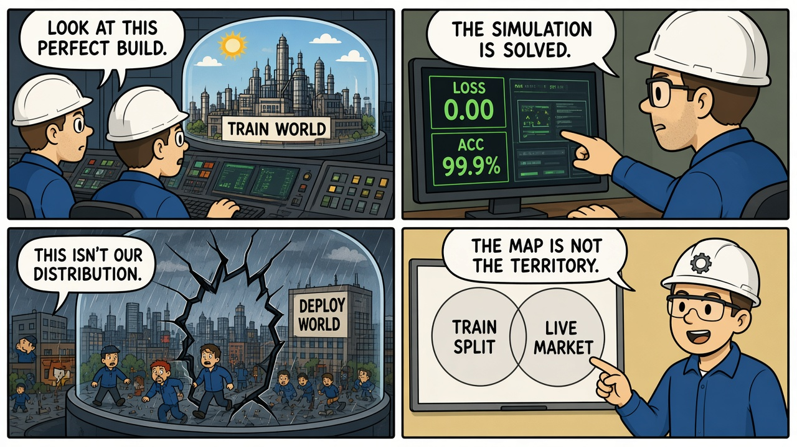
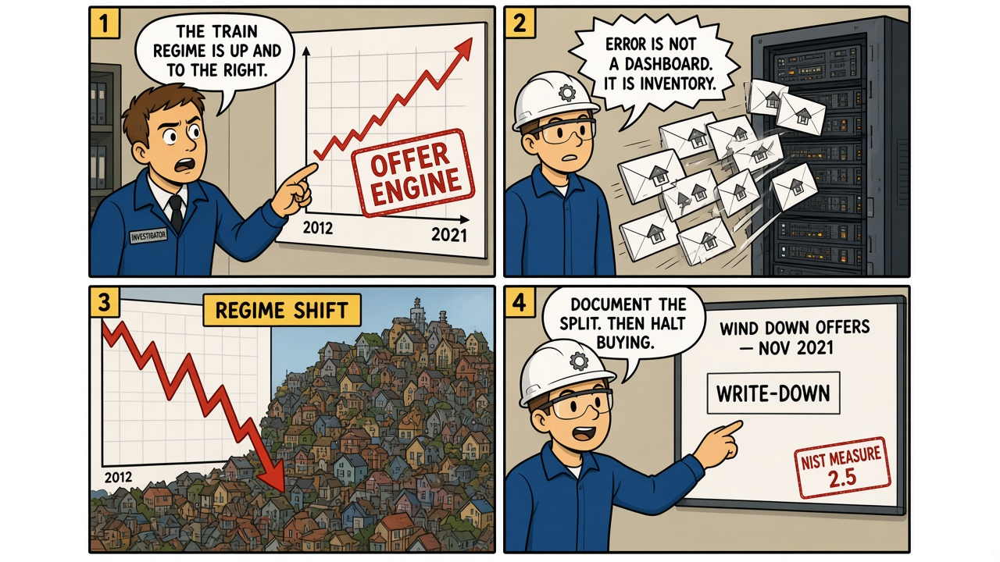

Module 06 / Model Risk The Matrix (1999)
The training world is a constructed split. When the real distribution moves, a perfect model of the old world is a liability.
The Script — Cinematic Anchor
Dialogue Extract
Scene Visual — Comic Strip

Dramatis Personae → Stack Mapping
- The first Matrix→Training / simulation distribution — a designed sample, not the territory
- The Architect / operators→Model owners who treated in-sample metrics as generalizability
- The humans who rejected it→The deploy-time distribution the train split did not contain
Diegetic Failure Mode
A system is optimized inside a constructed world and then asked to govern a different one. This is analogy, not sensor physics — the matrix in Section 03 has to say so. The transferable mechanism is undocumented limits of generalizability.
AI System Stack
The Incident — Empirical Grounding
Field Visual — Comic Strip

Real-World Incident Precedent
In November 2021 Zillow announced it would wind down Zillow Offers after large losses on homes bought with an algorithmic iBuying pipeline. Q3 2021 reporting described hundreds of millions of dollars in inventory write-downs and a subsequent workforce reduction. This is not "the neural net was evil." It is a pricing model and a buying loop trained and tuned in one housing regime, then run hard into another. Operations and aggressive bidding were part of the loss — the matrix must not pretend the model was the only actor. The ML lesson that survives that honesty is MEASURE 2.5: validity, reliability, and documented limits of generalizability beyond the conditions of development.
Cinematic vs. Reality Matrix
| Dimension | Media Depiction (The Script) | Field Reality (The Incident) |
|---|---|---|
| Failure Vector | A designed utopia is rejected because it is not the human distribution. | A pricing model and iBuying operation overfit a rising market and fail when the market's volatility and direction change. Thematic transfer (train ≠ deploy), not mechanical identity. Say so. |
| Time to Impact | Mythic backstory, then the current Matrix. | Months of buying into 2021; the exit is a single earnings cycle. |
| Operator Visibility | Almost no one inside the simulation knows it is one. | Zillow had residuals, inventory days, and conversion metrics. The failure was acting as if the train regime would hold, not a lack of any number. |
| Failsafe Behavior | The first Matrix is scrapped; a bleaker one is built. | Halt buying when shift metrics trip. That halt came late, as a corporate exit, not as a model-risk interlock. |
Root-Cause Analysis (RCA)
Classification: Data / Regime shift + Process (model-to-capital loop)Primary root cause is deploying a valuation policy beyond the regime it was demonstrated in, without a binding limit on generalizability. A contributing process cause is wiring that policy directly to capital at volume, so model error becomes inventory before a human halt.
Engineering Runbook & Countermeasures
Eval / Telemetry Envelope
| Parameter | Normal / Baseline | Trip Threshold | Condition at Failure |
|---|---|---|---|
| Residual vs. close | Error within the documented train/serve band | Sustained residual outside the band, or sudden heteroskedasticity | 2021: offers systematically off as the market turned |
| Feature / price PSI | Population stability inside an agreed envelope | Shift on price, days-on-market, or geo mix | Regime change visible in market stats before the full write-down |
| Inventory at risk | Cap on open iBuy exposure as a function of residual variance | Exposure grows while residuals worsen | Homes on the balance sheet; model error funded |
Mitigation / Recovery Protocol
- Document the development regime (dates, geos, rate environment). That document is the MEASURE 2.5 artifact.
- Shift interlocks: stop auto-offering when PSI / residual envelopes break. Do not wait for the quarter.
- Decouple model score from capital. A human (or a hard cap) sits between valuation and purchase.
- Backtest on known breaks (2008, 2020, 2022-rate shock) before claiming robustness.
- If the regime is gone, decommission the product (GOVERN 1.7 / MANAGE 2.4) rather than retune in a drawdown.